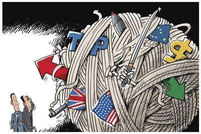

2013年3月，习近平主席提出构建人类命运共同体理念；9月和10月，先后提出共建“丝绸之路经济带”
和“21世纪海上丝绸之路”。共建“一带一路”倡议，创造性地传承弘扬古丝绸之路这一人类历史文明发展
成果，并赋予其新的时代精神和人文内涵，为构建人类命运共同体提供了实践平台。
十年栉风沐雨，十年春华秋实。中国同各国坚守初心、携手同行，推动“一带一路”国际合作从无到有，
蓬勃发展，取得丰硕成果。跨越不同文明、文化、社会制度、发展阶段差异，开辟了各国交往的新路径，搭建
起国际合作的新框架，汇集着人类共同发展的最大公约数，共同绘就了联结世界、美美与共的壮阔画卷。
在未来，“一带一路”倡议将继续发挥重要的作用。随着技术的进步和市场的扩大，沿线国家之间的经贸
合作将更加紧密，形成更加完整的产业链和供应链。同时，各国之间的文化交流也将更加深入，增进相互理解和友谊。
十年筚路蓝缕，共建“一带一路”围绕互联互通，以基础设施“硬联通”为重要方向，以规则标准“软联通”为重要支撑，以共建国家人民“心联通”为重要基础，不断深化政策沟通、设施联通、贸易畅通、资金融通、民心相通，不断拓展合作领域，成为当今世界范围最广、规模最大的国际合作平台。
政策沟通是共建“一带一路”的重要保障。中国与共建国家、国际组织积极构建多层次政策沟通交流机制，在发展战略规划、技术经济政策、管理规则和标准等方面发挥政策协同效应，共同制订推进区域合作的规划和措施，为深化务实合作注入了“润滑剂”和“催化剂”，共建“一带一路”日益成为各国交流合作的重要框架。截至2023年6月底，中国与五大洲的150多个国家、30多个国际组织签署了200多份共建“一带一路”合作文件，形成一大批标志性项目和惠民生的“小而美”项目
2013—2022年，中国与共建国家进出口总额累计19.1万亿美元，年均增长6.4%；与共建国家双向投资累计超过3800亿美元，其中中国对外直接投资超过2400亿美元；2022年，中国与共建国家进出口总额近2.9万亿美元，占同期中国外贸总值的45.4%，较2013年提高了6.2个百分点；中国民营企业对共建国家进出口总额超过1.5万亿美元，占同期中国与共建国家进出口总额的53.7%。
民心相通基础稳固。截至2023年6月底，中国已与45个共建国家和地区签署高等教育学历学位互认协议。 中国院校在132个共建国家办有313所孔子学院、315所孔子课堂；“汉语桥”夏令营项目累计邀请100余个共建国家近5万名青少年来华访学，支持143个共建国家10万名中文爱好者线上学习中文、体验中国文化。

设施联通是共建“一带一路”的优先领域。共建“一带一路”以“六廊六路多国多港”为基本架构，加快推进多层次、复合型基础设施网络建设，基本形成“陆海天网”四位一体的互联互通格局，为促进经贸和产能合作、加强文化交流和人员往来奠定了坚实基础。截至2023年6月底，中欧班列累计开行7.4万列，运输近700万标箱，货物品类达5万多种，涉及汽车整车、机械设备、电子产品等53大门类，合计货值超3000亿美元。中欧陆海快线从无到有，成为继传统海运航线、陆上中欧班列之外中欧间的第三条贸易通道，2022年全通道运输总箱量超过18万标箱，火车开行2600余列。西部陆海新通道铁海联运班列覆盖中国中西部18个省（区、市），货物流向通达100多个国家的300多个港口。

中国出资设立丝路基金，并与相关国家一道成立亚洲基础设施投资银行。截至2022年底，中国国家开发银行已直接为1300多个“一带一路”项目提供了优质金融服务，有效发挥了开发性金融引领、汇聚境内外各类资金共同参与共建“一带一路”的融资先导作用；中国进出口银行“一带一路”贷款余额达2.2万亿元，覆盖超过130个共建国家，贷款项目累计拉动投资4000多亿美元，带动贸易超过2万亿美元。中国信保充分发挥出口信用保险政策性职能，积极为共建“一带一路”提供综合保障。

新领域合作稳步推进。共建国家发挥各自优势，不断拓展合作领域、创新合作模式，推动健康、绿色、创新、数字丝绸之路建设取得积极进展，国际合作空间更加广阔。新冠疫情暴发以后，中国向120多个共建国家提供抗疫援助，向34个国家派出38批抗疫专家组，同31个国家发起“一带一路”疫苗合作伙伴关系倡议，向共建国家提供20余亿剂疫苗，与20余个国家开展疫苗生产合作，提高了疫苗在发展中国家的可及性和可负担性。
这是一场镌刻于这个蓝色星球的伟大实践, 150多个国家30多个国际组织参与 ，覆盖全球近三分之二的人口。
修筑新道路、新港口， 提供清洁能源 、丰富公共设施、 建设生机勃勃的城市 、改善交通格局 、提升贫困地区发
展水平 、在偏僻之处建起学校、 在贫瘠土地优化农业生产效率、 帮助一个又一个国家更快推进工业化进程 在许多
国家推进可持续能源替代进程 …在这，我们以太空视角和全球性大数据计算 ，观察“一带一路”对世界的影响。
以10年为跨度， 在全球经纬下 ，太空可见 共建“一带一路”带来的 积极影响和深刻变化。

我国已经成为连接走廊沿线经济体的全球价值链网络中更加核心的参与者。
在所有地区进口商品中所包含的中国增加值的占比都在逐步上升，在其他经
济体出口所包含的国内增加值中中国的占比也呈上升趋势。此外，根据将中国列
为出口产品国外增加值三大重要来源国的国家数量来判断，截至 2010 年中国已
经成为走廊沿线经济体中重要的引力中心。与这一发现相一致的是，早在中国 2
013 年正式提出一带一路倡议之前，中国与走廊沿线经济体的贸易关系和投资关
系就已经开始加强。

同时在共建“一带一路”过程中，我国积极发展双多边关系，建立起多层次、多平台、多主体的常规性沟通渠道。共建国家还依托中国－东盟（10+1）合作、中非合作论坛、中阿合作论坛、中拉论坛、中国－太平洋岛国经济发展合作论坛、中国－中东欧国家合作、世界经济论坛、博鳌亚洲论坛、中国共产党与世界政党领导人峰会等重大多边合作机制平台，不断深化务实合作。国在双边层面，共建“一带一路”与俄罗斯欧亚经济联盟建设、哈萨克斯坦“光明之路”新经济政策、土库曼斯坦“复兴丝绸之路”战略、蒙古国“草原之路”倡议、印度尼西亚“全球海洋支点”构想、菲律宾“多建好建”规划、越南“两廊一圈”、南非“经济重建和复苏计划”、埃及苏伊士运河走廊开发计划、沙特“2030愿景”等多国战略实现对接。

经济走廊和国际通道建设卓有成效。共建国家共同推进国际骨干通道建设，打造连接亚洲各次区域以及亚欧非之间的基础设施网络。中蒙俄经济走廊方向，中俄黑河公路桥、同江铁路桥通车运营，中俄东线天然气管道正式通气，中蒙俄中线铁路升级改造和发展可行性研究正式启动。中国－中亚－西亚经济走廊方向，中吉乌公路运输线路实现常态化运行，中国－中亚天然气管道运行稳定，哈萨克斯坦北哈州粮油专线与中欧班列并网运行。孟中印缅经济走廊方向，中缅原油和天然气管道建成投产，中缅铁路木姐－曼德勒铁路完成可行性研究，曼德勒－皎漂铁路启动可行性研究，中孟友谊大桥、多哈扎里至科克斯巴扎尔铁路等项目建设取得积极进展。在非洲，蒙内铁路、亚吉铁路等先后通车运营，成为拉动东非乃至整个非洲国家纵深发展的重要通道。
这些基础设施项目建成之后能够缩短走廊沿线经济体、特别是经济走廊沿线地区的运输时间。与世界其他地区相比，走廊沿线经济体的平均运输时间可缩短 3.2%，与其他走廊沿线经济体相比，可降低 4%。沿着单个的经济走廊，运输时间平均缩短8.5%，最高可缩短 12%。运输时间的缩短大幅度降低了贸易成本。如果一带一路倡议的全部交通基础设施项目得以实施，走廊沿线经济体与世界其他地区的贸易总成本将平均降低 2.8%，与其他走廊经济体之间的贸易成本将降低 3.5%。就运输时间而言，不同配对国家的贸易成本降幅相差很大，东亚太平洋地区和南亚的平均降幅最大。同样，走廊沿线贸易成本的降幅也更大。例如，中国 - 中亚 - 西亚经济走廊沿线的贸易成本将降低 10%。

据世界银行 研究预测，，一带一路倡议降低贸易成本，从而促使 2030 年全球实际收入 相对于基准线增加 0.7%。其中，巴基斯坦和吉尔吉斯共和国 等国家有望实现实际收入的最大收益，分别高出基准线 10.5% 和 10.4%。预计新的 一带一路倡议项目将大大改善这些国家进入出口市场的机会。预计东亚经济体将 从中受益匪浅：泰国（8.2%）、马来西亚（7.7%）、柬埔寨（5.0%）、老挝（3.1%）。 其他实际收入实现大幅度增长的国家有：孟加拉国（6.9%）、土耳其（3.6%）、伊 朗（3.0%）和坦桑尼亚（2.5%）。

在未来，“一带一路”将为世界脱贫做出重大贡献。据世界银行预测，一带一路倡议相关的投资能够使 760 万人口摆脱极端贫困。在肯尼亚和坦桑尼亚，预计到 2030 年摆脱极端贫困的人数将增加 70 万人，这大约相当于极端贫困人口比例降低 1.0 和 0.9 个百分点。在南亚，巴基斯坦摆脱极端贫困的人数将增加 110 万人，预计孟加拉国将增加 20 万人摆脱极端贫困。


.png)